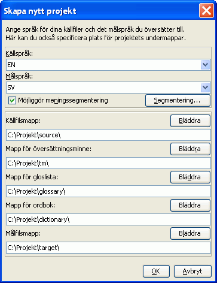

Snabbstarten täcker bara grunderna. Egentligen borde alla användare läsa användarmanualen för att ta del av allt som OmegaT har att erbjuda. Genvägar beskrivs här som "ctrl+tangent" , men Mac-användare borde läsa det som "cmd+tangent" istället. Tangenten "cmd" är antingen märkt "command" eller med ett äpple på Apples tangentbord.
OmegaT består av ett fönster med tre distinkta paneler. Du kan ändra storlek på panelerna med musen. Till vänster är Redigeraren, där du skriver din översättning. Överst till höger är Träffgranskaren, där träffar från översättningsminnet kommer att visas. Nedan är Ordlistegranskaren, där träffar från ordlistan kommer att visas.
I Redigeraren presenterar OmegaT källtexten 'segmenterad' i meningar (eller stycken). Du översätter dessa segment ett i taget. När du går igenom segmenten sparas dina översättningar i ett översättningsminne. När alla segment har översatts (eller innan, om du begär det) använder OmegaT översättningsminnet för att skapa de översatta dokumenten i en målkatalog.
OmegaT organiserar ditt översättningsarbete i så kallade översättningsprojekt. För varje projekt skapar OmegaT en uppsättning av mappar. Dessa används för att lagra källdokument som ska översättas, ordlistor som du kan använda, och eventuella översättningsminnen du har. OmegaT skapar också en målkatalog som kommer innehålla de översatta dokumenten..
Välj Projekt → Nytt... från menyn.
Navigera till mappen där du vill skapa projektfilerna, och skriv in ett namn på projektet, Namnet kommer användas för projektets huvudkatalog; alla projektfilerna kommer sparas i katalogen eller dess undermappar.
OmegaT kommer be dig att bekräfta eller ändra projektkatalogen som ska skapas med dialogen nedan:

Du kan helt enkelt godkänna placeringen av undermapparna, men se först till att språkkoderna för käll- och målspråk är korrekta. Välj språkkod (2 bokstäver) eller språk-och-regionskod (2+2 bokstäver) från rullgardinslistorna, eller skriv in dem själv (språkkoden kan ha 2 eller 3 bokstäver). Kom ihåg var du lagt Målkatalogen (för dina översatta dokument). Om du vill att OmegaT ska segmentera i meningar istället för stycken är det en bra idé att dubbelkolla Segmenteringsreglerna.
När du klickar OK för att godkänna inställningarna för projektet, kommer OmegaT be dig att välja källdokument för import. Du kan importera enskilda filer eller hela mappträd (inklusive alla filer i alla undermappar). Om du råkat importera fel dokument, eller för många, kan du helt enkelt ta bort dem från källkatalogen i ditt OmegaT-projekt (exempelvis med operativsystemets filhanterare).
För att kontrollera din lista av filer att översätta, se fönstret Projektfiler (Meny: Projekt → Projektfiler..., om det inte öppnas automatiskt). Om du måste ändra innehållet i Källkatalogen, kom ihåg att också uppdatera projektet (Meny: Projekt → Uppdatera). OmegaT öppnar automatiskt den första filen i fillistan. Kom ihåg att OmegaT endast kan översätta dokument i formaten nedan om de passar mönstren definierade i filfiltren. Alla andra filer kommer ignoreras.
När du definierat projektet och filerna att översätta kommer OmegaT öppna den första filen i Redigeraren. Det första segmentet är markerat i grönt: en kopia av källtexten visas nedanför det, i målfältet. (Vid detta tillfälle är alla annan text utanför det aktuella målfältet skyddad och kan inte ändras.) Du måste skriva din översättning mellan taggarna <segment 0001> och <slut segment>, och skriva över källtexten. Tryck "ENTER" för att komma vidare till nästa segment. Observera:
När du trycker "ENTER", händer flera saker samtidigt: OmegaT lägger till segmentparet (källsegmentet och översättningen) i översättningsminnet och översätter automatiskt eventuella identiska segment som det upptäcker i övriga projektfiler. Det läser också översättningsminnet och ordlistan efter träffar för nästa oöversatta segment.
Om OmegaT hittar luddiga träffar (30 % och uppåt) för nästa segment, visar det dessa i panelen för träffar. Den första träffen är förvald automatiskt. För att infoga träffar från översättningsminnet i målfältet kan du använda dig av tangentbordsgenvägar:
Ctrl+I för att infoga den förvalda träffen vid markören, eller...Ctrl+R för att skriva över hela segmentet med den förvalda träffen.Om flera träffar har hittats och du föredrar att inte använda den förvalda träffen:
Ctrl+2 för den andra träffen,, Ctrl+3 för den tredje, etc.Ctrl+I eller Ctrl+R som ovan.(Du kan be OmegaT att automatiskt sätta in eventuella första träffar över en angiven träffprocent när segmentet öppnas. Ställ in detta under Alternativ → Redigeringsbeteende...)
Träffar i gloslistor och ordböcker som du lagt till projektet visas som referens i panelerna för gloslistor och ordböcker.
OmegaT har flera kraftfulla sökfunktioner. Ta fram Sökfönstret med Ctrl+F och ange ett ord eller en fras som du vill söka efter i "Sök efter"-fältet. Alternativt, markera ett ord eller fras i redigeringsfältet (måltexten i det aktiva segmentet) och tryck Ctrl+F. Ordet eller frasen anges då automatiskt i "Sök efter"-fältet.
I panelen för Google Translate, får du automatiskt ett förslag till översättning av det aktuella segmentet. Du kan infoga förslaget med Ctrl+M i målsegmentet.
När du har översatt alla segmenten (eller innan om du så önskar) kommer OmegaT skapa måldokumentet/en genom att använda översättningarna som sparats i översättningsminnet. För att göra det, välj Projekt → Skapa översatta dokument från menyn. OmegaT kommer skapa översatta versioner av alla översättbara dokument i från källkatalogen oavsett om de blivit helt översatta eller inte. De helt eller delvis översatta dokumenten kommer sparas i projektets målkatalog. För att slutföra din översättning, öppna målfilerna i deras normala program (webbläsare, skrivprogram...) för att kontrollera innehållet och formateringen av översättningen. Du kan sedan återvända till OmegaT för att göra eventuella korrigeringar, men glöm inte att skapa de översatta dokumenten på nytt, så att filerna uppdateras!
OmegaT använder speciella taggar för att kunna behålla formateringen i dokument (fetstil, kursiv etc.). Taggarna i OmegaT består av en eller flera bokstäver, följd av en eller fler siffror, och använder snedstreck (/) för att markera slutet på taggen (t.ex.: <f0>, </f0> <br>, </s2> etc.). Du måste se upp med dessa taggar och se till att de inkluderas i målsegmenten på ett lämpligt sätt (se Tag operations).
I de här exemplen har vi markerat taggarna för att göra dem tydligare, men i OmegaT kommer de inte markeras. HTML-taggarna, märkta i blått, kommer att ignoreras av OmegaT, eftersom de innefattar hela segmentet. Taggarna markerade med grönt måste hanteras av OmegaT, eftersom de bara gäller en del av segmentet. Här är ett exempel på ett segment i HTML:
<p>A different display font can be selected via the <b>Display Font</b>dialog. Open it via the <i>Settings</i> → <i>Display Font...</i>menu item.Öppna den genom menyn <i>Inställningar</i> → <i>Visningstypsnitt...</i>. The font type and size can be changed from the dialog.</p>Storlek och typ av typsnitt kan ändras i dialogen.</p>
Så här kommer OmegaT visa segmentet, med översättning till afrikaans:
När OmegaT har skapat dokumenten kommer HTML-dokumentet se ut så här:

OmegaT känner inte automatiskt av felaktig taggning i det översatta dokumentet. Innan du skickar dokumentet till din kund borde du därför kontrollera dina taggar.
Välj Verktyg → Verfifiera taggar från menyn. En tabell kommer visa de segment där käll- och måltaggar inte stämmer överens. Klicka på segmentnumret. Du kommer automatiskt tas till det ovissa segmentet i Redigeraren, där du kan korrigera taggningen. Tryck enter för att verfiera det rättare segmentet och kontrollera rättningen genom att trycka Ctrl-T igen.
I vissa fall kan taggfel göra att ett dokument inte kan öppnas. Du bör därför se till att ha korrigerat eventuella fel innan du skapar de översatta filerna. Slutligen bör du dessutom alltid dubbelkolla den slutliga formateringen genom att öppna det översatta dokumentet i dess normala program.